Reciclado del plástico
Antes de pensar en el tratamiento de los residuos plásticos del hogar, hay que tener muy en claro cómo se clasifican y preparan antes de dicho tratamiento.
Algunas personas suelen creer que separar todo tipo de residuo plástico del resto de residuo de la casa es todo lo que se puede hacer para reciclarlo, cuando en realidad es solo el primer paso para reciclarlo correctamente. Luego de separar todo material plástico del resto de residuos estos se deben de clasificar según su tipo, pero ¿Cómo saber qué tipo de plástico se tiene y si se puede reciclar o no? Actualmente muchas empresas que utilizan plástico para empaquetar sus productos colocan en ellos diferentes códigos que ayudan a los consumidores a saber si puede reciclarse y en qué categoría de plásticos entra. Estas marcas suelen encontrarse en la base de los empaques/ botellas.
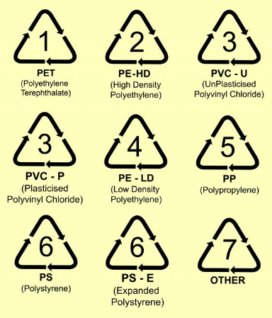Una vez se hayan separado los plásticos en estas categorías se procede a dar inicio al tratamiento mecánico que se ha decidido realizar para este caso. A este tipo de reciclaje se le llama reciclaje mecánico, el cual consiste en cortar en piezas pequeñas el plástico para que luego sean tratados correctamente.
Debido a que este proceso está guiado para ser realizado en casa, no se llevará a cabo la parte final del reciclado mecánico, el cual consiste en la transformación de los trozos de plástico en nuevos materiales ya que para realizar este proceso se necesita un sistema más complejo y caro. Por lo que se sugiere llevar el plástico ya triturado y separado en categorías a un punto de reciclado o un establecimiento donde se compre plástico, lugar en el que es mejor remunerado el plástico si se lleva limpio, triturado y categorizado.
Preparación del Plástico Previo a Triturado
Cuando ya se tenga una cantidad de plástico considerable, se deberá lavar todo el plástico. Es preferible guardar todo el plástico que se obtenga, luego lavarlo y secarlo correctamente, para finalmente separarlo por las categorías que se presentaron anteriormente.
La manera más práctica de lavar estos materiales será usando un recipiente grande donde se puedan enjuagar con jabón para platos, se recomienda este tipo de jabón ya que es más fácil de retirar y hace menos espuma que el detergente. De igual manera para retirar restos de cualquier alimento o suciedad que tengan los plásticos se puede hacer uso de algún mascón de platos viejo.
En caso de ser botellas o recipientes que fueron usados para contener algún tipo de líquido se debe asegurar que no queden restos de este líquido en dichos recipientes, de igual manera cuando se terminen de lavar se debe ser cuidadoso de no dejar nada de agua o restos de jabón. Para facilitar el secado, se pueden cortar las botellas por la mitad, esto es opcional ya que requiere más tiempo pero puede reducir el que tardan en secar
Cuando ya todos los plásticos están lavados y totalmente secos, se procederá a separarlos. Tener en cuenta que se necesitarán recipientes o bolsas resistentes para almacenar el plástico que vaya siendo triturado esto hará también más fácil su transporte.
Con todo nuestro plástico listo procedemos a triturarlo, para esto se construirá una trituradora de plástico casera. Se debe tener en cuenta que dicha trituradora se hará de un tamaño pequeño-mediano por lo tanto no será capaz de triturar plásticos de más de 0.5 cm de grosor o que sean más grande que la trituradora
Instrucciones para la construcción de una moledora de plástico
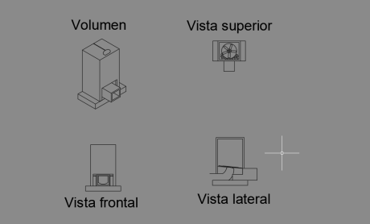Materiales:
- 1 Pulidora de cualquier tamaño (en este caso nosotros utilizaremos una de 4.5 pulgadas)
- 2 Discos de corte de ladrillo
Tablas de madera:
Puede utilizarse cualquier tipo de madera que se tenga en casa incluso puede realizarse con sobrantes que se encuentren en casa de trabajos pasados. Ahora bien, para esta moledora inicialmente necesitaremos:
- 2 Tablas de 30 cm de largo por 20 cm de ancho
- 1 Tablas de 20 cm de largo y 15 cm de ancho
- 1 Tablas de 16 cm de largo y 15 cm de ancho
- 1 Tabla recortada con 20 cm de largo y 15 cm de ancho
- 2 Regla de madera de aproximadamente 10 cm de largo y 8 cm de ancho
- 1 Regla de madera de aproximadamente 15 cm de largo y 10 cm de ancho
- 1 Cuadrado de madera de 10 cm de largo por 10 de ancho.
- 1 Tabla de 40 cm de largo y 40 cm de ancho para la base
- 1 Pieza de playbook o cualquier otro material semejante de aproximadamente 30 cm de largo y 30 de ancho.
Metal:
- 1 Placa de aluminio o metal que se tengan en casa de aproximadamente 21 cm de largo y 15 cm de ancho
- 2 Tiras de metal de aproximadamente 20 cm de largo y 8 cm de ancho
Herramientas:
- Taladro
- Clavos de acero de una pulgada y de 2 cm, aunque puede realizarse con clavos de otras medidas o incluso reutilizar algunos que estén en desuso dentro de casa
- Tornillos de acero de medianos
Pasos:
Empezaremos armando la estructura que sostendrá nuestra máquina para triturar plásticos.
-
Tomamos una de las tablas de 30 x 20 cm y la unimos por los costados con la tabla de 20 x 15.
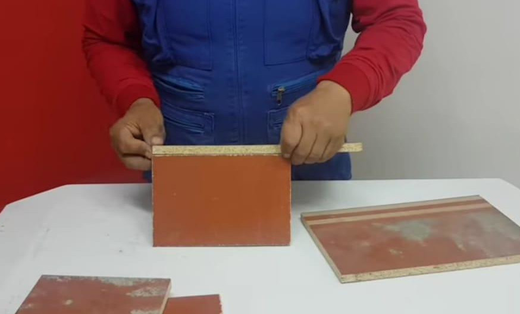 -
Tomamos la tabla de 16 x 15 y la unimos en el otro costado.
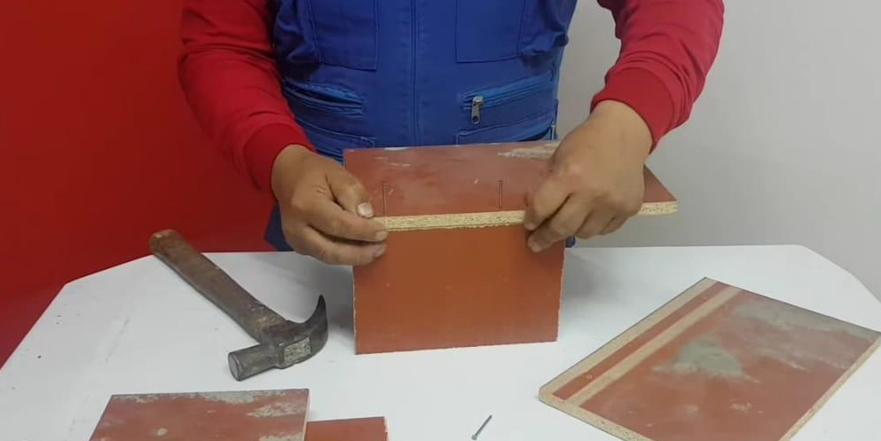 -
Tomamos la tabla restante de 30x20 y cerramos la estructura la cual parece un cajón.
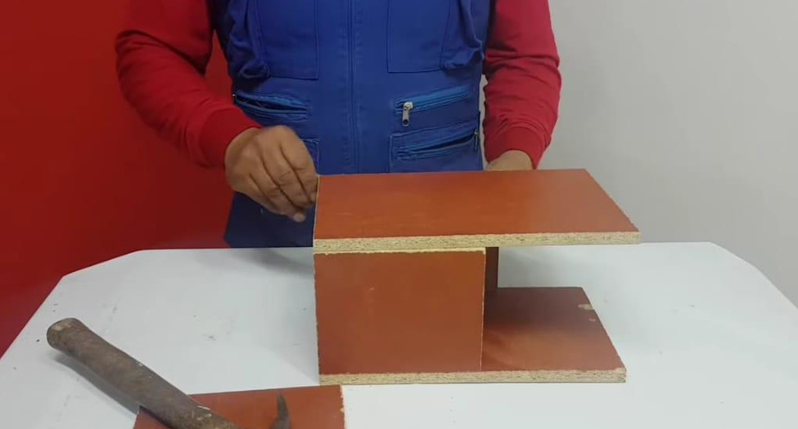 -
Una vez terminada la armazón de madera procedemos armar la estructura de metal para esto tomamos la placa de aluminio o cualquier otro metal de 21 x 15 cm y las tiras que recortamos este mismo material de 20 x 8 cada una.
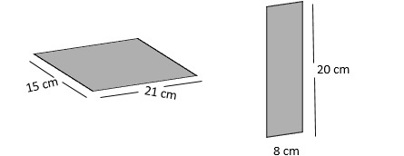 -
La placa unida a las tiras nos ayudará a sostener en un lugar fijo la pulidora para eso las uniremos utilizando ya sea soldadura o con ayuda del taladro y tornillos de metal lo podemos unir por los laterales teniendo en consideración dejar un espacio de alrededor de 2 cm a la hora de fijar las tiras en la placa principal.
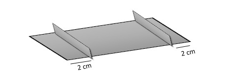 -
Luego de haber unido las tiras, con ayuda de la cinta métrica y un lápiz marcamos el punto medio de la placa, posteriormente y con ayuda de un taladro realizamos un agujero en el centro de la placa con diámetro suficiente para poder colocar los discos en la pulidora, teniendo en cuenta que esta estará colocada bajo la placa.
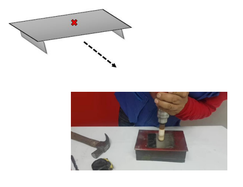 -
Ahora en la parte inferior de la placa realiza una serie de marcas las cuales con ayuda del taladro convertirás en agujeros con un diámetro aproximado de 2 cm.
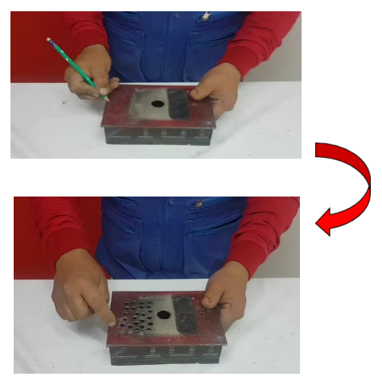 -
Ahora para poder fijar esta pieza de metal en la armazón de madera que antes habíamos realizado procederemos a realizar unos pequeños agujeros en los laterales con ayuda del taladro.
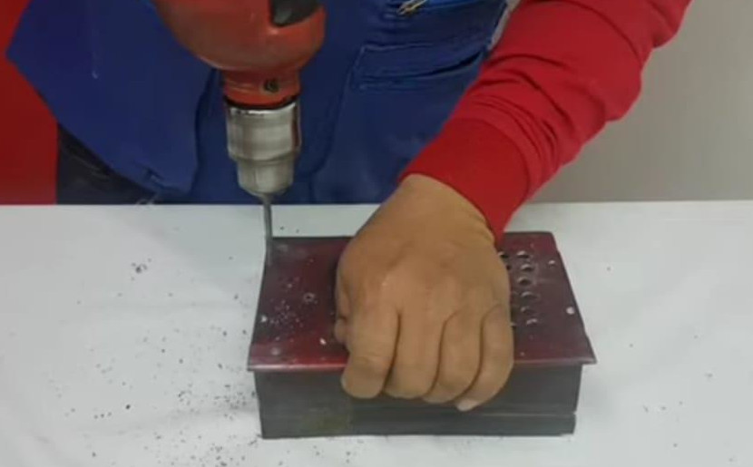 -
Colocaremos nuestra pieza de metal en nuestra armazón de madera, con lo que conseguiremos algo como lo que se muestra en la siguiente imagen :
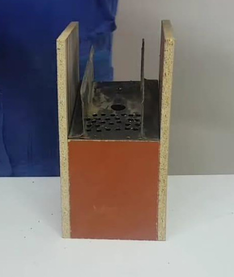 -
Procederemos a fijar la pieza con ayuda de tornillos.
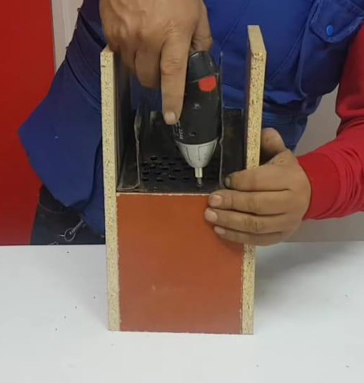 -
A continuación, colocaremos la pulidora entre el espacio de nuestra pieza de metal y con ayuda de la tabla de medidas 20 x 15 cm la fijamos a la armazón asegurándose con tornillos de la forma que se muestra a continuación.
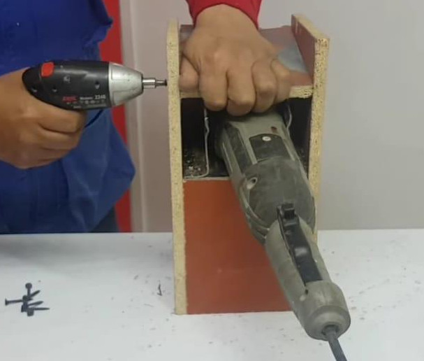 -
Tomamos la tabla con medidas 40 x 40 cm la cual se convertirá en nuestra base y la fijamos con ayudas de tornillos.
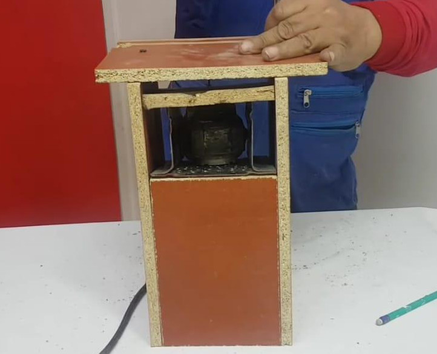 -
Ahora tomaremos las reglas de madera de 10 x 8 cm, la regla de 15 x 10 cm y el cuadrado de 10 x 10 cm con las cuales repetiremos el mismo procedimiento que seguimos a la hora de armar la estructura de madera de nuestra máquina.
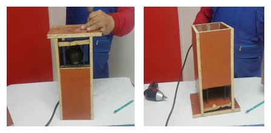 -
Una vez armado lo colocamos en el espacio donde saldrá nuestro plástico ya picado así como se muestra en la siguiente imagen:
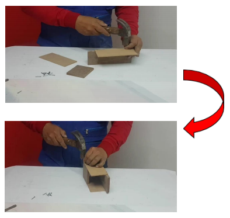 -
Tomamos la pieza de playbook de aproximadamente 30 x 30 cm, medimos la parte superior de nuestra máquina para triturar plástico y cortamos una pieza con las mismas dimensiones del trozo de playbook.
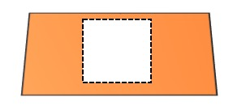 -
Una vez recortada la pieza realizamos un agujero con un diámetro de aproximadamente 10 cm lo suficiente como para introducir una botella de plástico estándar en la parte inferior dejando unos 5 cm del borde y en la parte superior podemos realizar una incisión para poder reciclar de manera más fácil los CD que ya no utilizamos. Esta parte puede suprimirse y cambiarse por una tapadera en caso que se trituren objetos que tengan otras formas.
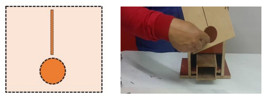 -
Casi para finalizar, colocamos los discos para cortar ladrillo en la pulidora de la forma como se indica en la imagen la cual está dentro de nuestra estructura de madera, nos aseguramos que estén fijos y bien puestos.
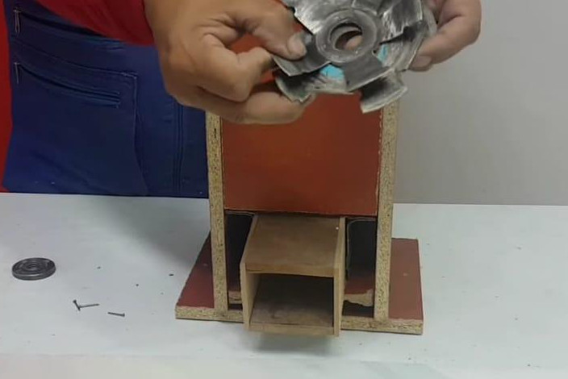 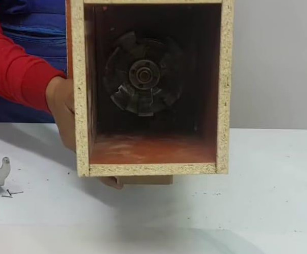 -
Como último paso fijamos la pieza de playbook en la parte superior de nuestra máquina , como si de una tapa se tratara.
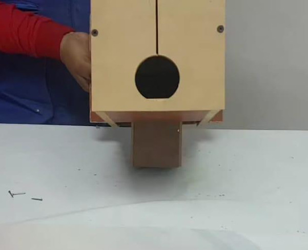 -
Su máquina casera para triturar plásticos está lista.
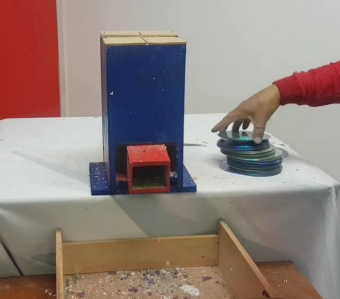
Reciclando plástico
Con la elaboración de esta máquina usted puede triturar plástico, eliminando contaminación de los suelos y cuerpos de agua este plástico procesado puede ser vendido, colabora y promueve al reciclaje, ayudemonos a salvar nuestro hogar.
Vea más en:
- Arandes, J., Bilbao, J., & López, D. (2004). Reciclado de residuos plásticos. Revista Iberoamericana De Polímeros, 5(1), 28-45.
- Barragán Gutiérrez, L. E. (2020). Propuesta de mejora para la recolección, recepción, proceso y almacenaje de las tapas plásticas en la fundación carlos portela de la ciudad de cali.
- Castells, X. E., & de Gracia, L. J. (2012). Los plásticos residuales y sus posibilidades de valoración: Reciclaje de residuos industriales Ediciones Díaz de Santos.
- Generalitat Valenciana. (2015). Manual de buenas prácticas: Gestionar los residuos en el hogar. (). Valencia España: Recuperado de http://www.arpet.org/docs/Manual-de-buenas-practicas-Gestionar-los-residuos-en-el-Hog ar.pdf
- RCPE Channel (Producer), & RCPE Channel (Director). (2019, Noviembre 20,). Molino para picar tapas plásticas. [Video/DVD] Colombia: Recuperado de https://youtu.be/sOtk4fB_hng
- RCPE Channel (Producer), & RCPE Channel (Director). (2020, Mayo 15,). ¿Cómo moler plástico para fundir? [Video/DVD] Colombia: Recuperado de https://youtu.be/e9OtXQSaZkM
- SP Group. (2018, 27 Junio). Conoce cuáles son y para qué sirven los códigos de identificación de los plásticos. Recuperado de https://www.spg-pack.com/blog/codigos-identificacion-plasticos/